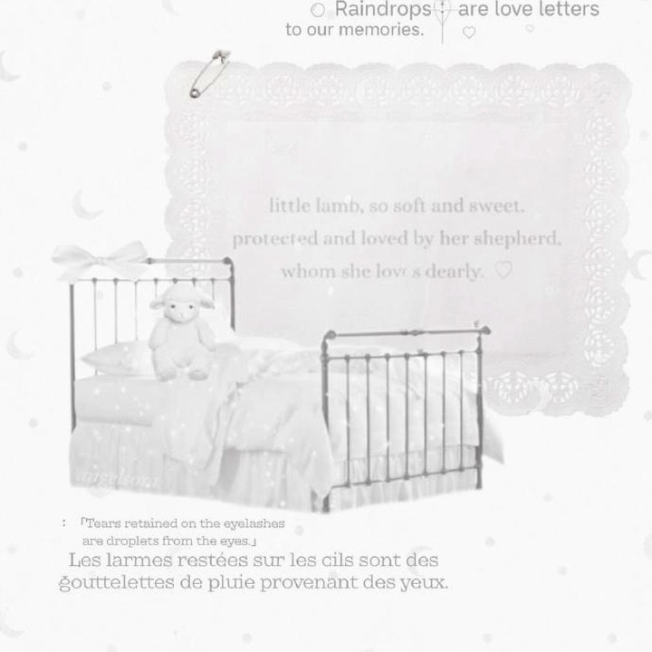
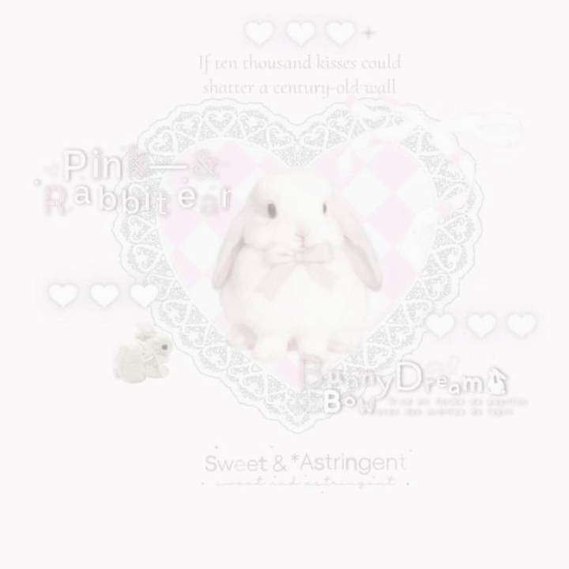
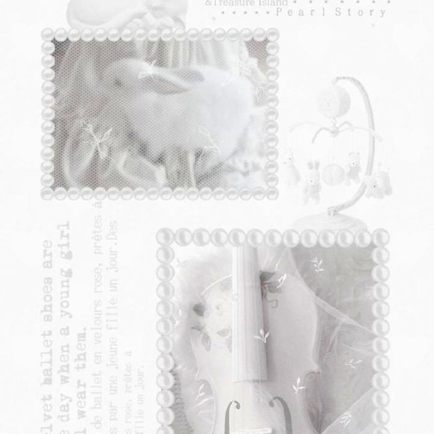
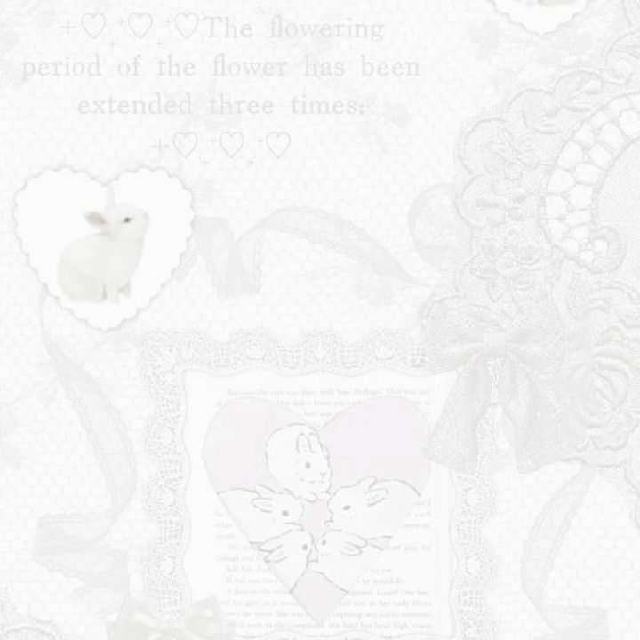
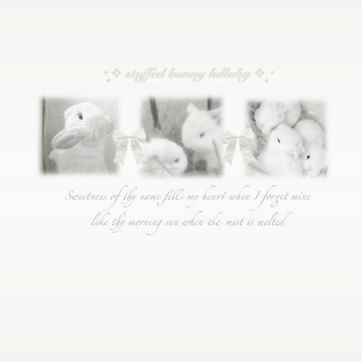
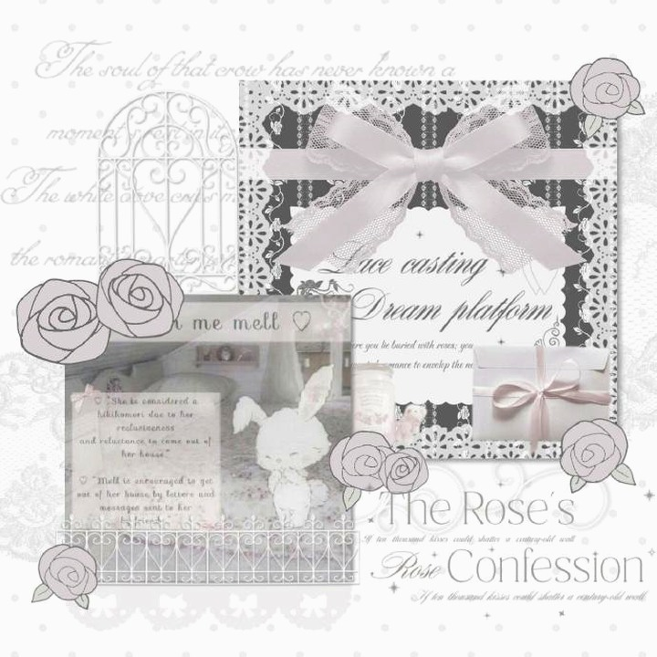

The Rose’s soft confession
A Tender Little World
Love casting dream platform · a soft and warm confession. 把甜甜的梦，写进每一页手账。

文章
❤ 268💬 24
文章
❤ 142💬 11
文章
❤ 386💬 38

杂谈
❤ 97💬 7

杂谈
❤ 231💬 19

照片
❤ 158💬 13
照片
❤ 412💬 45

照片
❤ 76💬 5

照片
❤ 203💬 22
照片
❤ 315💬 30
照片
❤ 184💬 16
没有找到相关内容，换个关键词试试吧 ❄